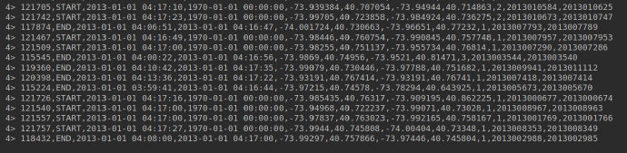

环境配置
首先确保已经下载好flink依赖，并从Github下载代码。
下载依赖数据，这里依赖的是纽约出租车数据，可以使用命令行下载：
wget http://training.data-artisans.com/trainingData/nycTaxiRides.gz wget http://training.data-artisans.com/trainingData/nycTaxiFares.gz
由于本项目使用java编译，而源文件有scala，为了忽略scala的错误，这里需要指定scala的SDK：
项目
数据设置
使用IDEA打开该maven项目，首先需要找到依赖的文件路径：

可以在ExerciseBase类中找到依赖的出租车数据文件路径并修改：
这里使用的是出租车的 event-time
Taxi Ride Cleansing
在utils类中，可以找到GeoUtils，这是用来检测该GPS点数据是否在纽约市内，具体实现参考isInNYC(float lon, float lat)函数。
RideCleansingExercise
若直接运行com/dataartisans/flinktraining/exercises/datastream_java/basics/RideCleansingExercise.java，会报错，其错误是在NYCFilter中：
这里的MissingSolutionException未定义，需要自己实现：
RideCleansingTest
在RideCleansingTest中定义了该类的测试类，我们可以每个函数逐步运行：
仔细查看，这里测试了两个函数，分别是测试指定GPS点是否在NYC中，每次将运行的结果与真实结果进行比较（assertEquals），并判断是否相等。
如何test
- 由于该文件由
RideCleansingExercise和RideCleansingSolution组成，且exercise是我们需要处理的类，Solution是正确的类，因此我们要对两个类进行比较。 - 这里使用
javaExercise和javaSolution分别指向这两个类的main函数，并执行RunApp方法： - 其中，RunApp又调用了execute方法，这里才是真正执行的函数：
- 在每个测试类中，我们发现其加入source的方法都一样，如果未指定输入源（
ExerciseBase.rides），则将所有的数据作为数据源；这里我们已经指定了特定的GPS点作为数据源。 - 这里会将执行了
filter函数的值进行返回，并与grandtruth进行比较。
Revise
知道错误以后，我们就应该修改之前
RideCleansingExercise类中的filter方法，其实就是使用isinNYC函数，返回一个bool类型：private static class NYCFilter implements FilterFunction<TaxiRide> { @Override public boolean filter(TaxiRide taxiRide) throws Exception { return GeoUtils.isInNYC(taxiRide.startLon, taxiRide.startLat) && GeoUtils.isInNYC(taxiRide.endLon, taxiRide.endLat); } }再次运行该类，可以得到在NYC的所有GPS点：
